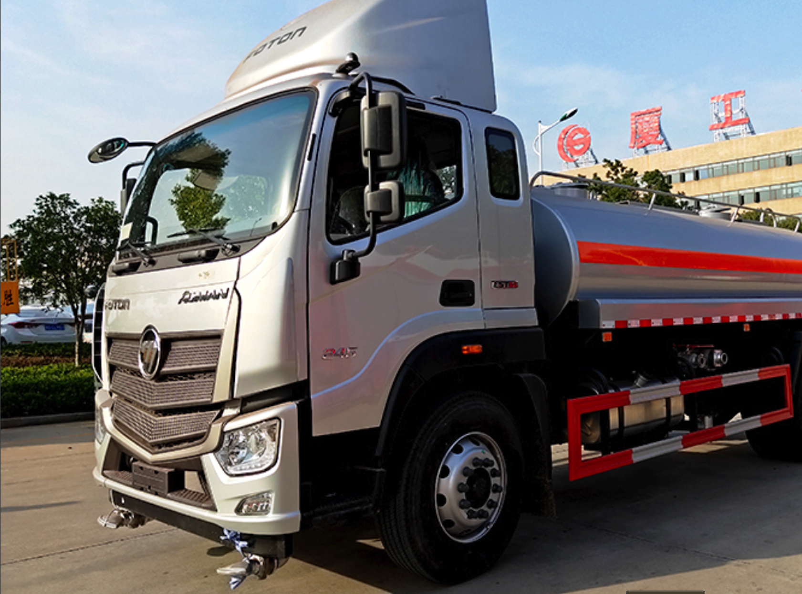
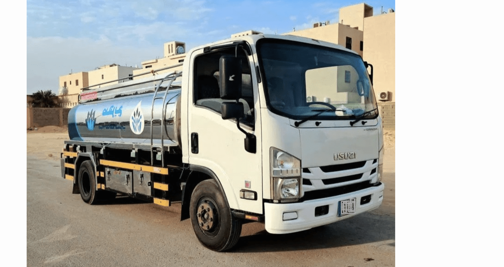
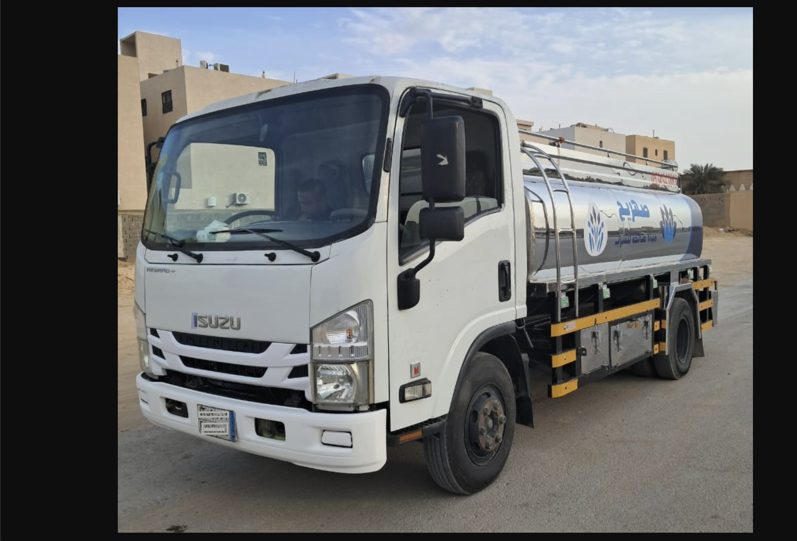

وايت ماء لجميع أحياء الرياض
وايت ماء الرياض صالحة للشرب
في مؤسسة الباهي للمياه بالرياض، نوفر لك خدمة توصيل موية تحلية صالحة للشرب بسعة 6 طن، بأعلى جودة وأسرع وقت في جميع أحياء الرياض. نغطي كل مناطق الرياض. نضمن لك موية نقية مع تعقيم الصهريج قبل كل تعبئة، وخدمة احترافية على مدار 24 ساعة.
 ارسال طلب
ارسال طلب
طريقة طلب وايت ماء بالرياض
إذا كنت تتساءل عن طريقة طلب وايت ماء في الرياض، فالعملية معنا في مؤسسة الباهي للمياه بالرياض بسيطة وسريعة. كل ما عليك هو تحديد موقعك بدقة داخل أحد أحياء الرياض، ثم التواصل معنا عبر الاتصال أو الواتساب، وتحديد حجم الوايت المطلوب (6 طن).
بعدها، يقوم فريقنا المختص بإرسال صهريج موية تحلية نقية وصالحة للشرب إلى موقعك في أسرع وقت ممكن، سواء كنت تحتاج الموية لتعبئة خزان علوي أو أرضي، أو حتى للمسابح والاستراحات والمواقع تحت الإنشاء.
اطلب الآن وكن مطمئناً… التوصيل يتم خلال دقائق بجودة عالية وأسعار مناسبة.

اطلب وايت ماء في الرياض بسهولة
في مؤسسة الباهي للمياه بالرياض، اطلب وايت ماء في الرياض ما يحتاج أي تعقيد. فقط حدد موقعك بدقة داخل أحد أحياء الرياض (سواء شمال أو جنوب)، وتواصل معنا عبر الاتصال أو الواتساب، واذكر حجم الوايت اللي تحتاجه (6 طن أو 18 طن). فريقنا بيتولى الباقي ويوصلك الموية بسرعة، سواء لخزان المنزل، مزرعة، مسبح، أو مشروع قيد الإنشاء. نستخدم سيارات نظيفة ومجهزة لضمان جودة المياه، والتوصيل يتم خلال دقائق.
نصلك في أقرب وقت واي مكان في جنوب الرياض ونقدم حلول متكاملة لتوفير عليك الوقت والمجهود. اطلب الآن وخل الخدمة توصلك لين عندك!

صهريج مياه في الرياض لتعبئة الخزانات
إذا كنت بحاجة إلى صهريج مياه في الرياض لتعبئة خزاناتك العلوية أو الأرضية، فأنت في المكان المناسب. نوفر في مؤسسة الباهي للمياه بالرياض خدمة توصيل صهاريج مياه نقية وصالحة للشرب بسعة 6 طن، مع ضمان النظافة الكاملة للصهريج من الداخل والخارج، وتوصيل سريع إلى مختلف أحياء الرياض.
نتميز بسرعة الاستجابة، وجودة المياه المحلاة، وأسعار تنافسية تبدأ من 120 ريال فقط. سواء كنت تحتاج صهريج موية للمنازل، المسابح، المشاريع تحت الإنشاء أو الاستخدام التجاري – فريقنا جاهز لخدمتك على مدار الساعة.
اطلب الآن أقرب صهريج مياه يوصل لموقعك بأمان وسرعة.
أقرب وايت ماء من موقعك في الرياض
إذا كنت تبحث عن أقرب وايت ماء من موقعك في الرياض، فأنت في المكان الصحيح. نوفر خدمة سريعة واحترافية لتوصيل وايت مياه تحلية 6 طن في جميع أحياء الرياض، مع ضمان جودة المياه ونظافة الصهريج.
توصيل فوري خلال دقائق
نغطي جميع أحياء الرياض مع سرعة استجابة عالية وضمان جودة المياه ونظافة الصهريج قبل كل تعبئة.
سعة 6 طن موية تحلية
الحجم الأنسب للخزانات العلوية والأرضية للمنازل، الاستراحات، المسابح والمواقع تحت الإنشاء.
خدمة 24 ساعة
متواجدون على مدار اليوم لتلبية طلبك في أي وقت مع خدمة عملاء احترافية.
مناطق الخدمة
نغطي جميع مناطق وأحياء الرياض ونصل إليك أينما كنت داخل مدينة الرياض أو محافظاتها.
لم تجد منطقتك؟ تواصل معنا وسنصل إليك.
وايتات ماء للإيجار / للتوريد في جميع أنحاء الرياض
نوفر أسطولاً من وايتات المياه المجهزة بأعلى المواصفات: ليات بأحجام متنوعة، وماتور ضغط قوي. خدماتنا تشمل توريد مياه الشرب للبرادات، المطاعم والكافيهات، اختبارات العزل ورصف الطرق، رش الزرع والحدائق، وإمكانية التعاقد الشهري أو السنوي.
توريد للمنازل والاستراحات
تعبئة الخزانات العلوية والأرضية، المسابح والمزارع مع ليات بأطوال مختلفة وماتور ضغط قوي.
حلول للمشاريع والشركات
توريد مستمر لمواقع العمل، المطاعم، الكافيهات والمشاريع تحت الإنشاء بعقود شهرية أو سنوية.
اختبارات عزل ورش حدائق
خدمة وايت ماء لاختبارات العزل ورصف الطرق، ورش الحدائق العامة والخاصة.
سعر وايت ماء صغير يبدأ من 120 ريال فقط
نوفر وايت مياه محلاة بسعة 6 طن، الأنسب للاستخدام اليومي في جميع أحياء الرياض. السعر يبدأ من 120 ريال ويختلف حسب الموقع والمسافة. جودة عالية، سرعة في التوصيل، وتعقيم كامل للصهريج.
آراء عملائنا
خالد الدوسري
والله خدمة ما تلقى مثلها. أطلب منهم من زمان، السعر معقول والوصول سريع حتى بالليل. الله يعافيهم.
فهد العتيبي
جربت عدة شركات وايت ماء، لكن مؤسسة الباهي للمياه بالرياض تميزت بالسرعة والنظافة. الصهريج نظيف والموية زاكية. أنصحكم فيهم.
نورة الشمري
والله ما تأخرون. طلبت وايت 6 طن وصل خلال أقل من نصف ساعة، والتانكي نظيف والموية عذبة. شكراً لهم.
تركي المطيري
اتصلت عليهم وقت متأخر من الليل ووصلون في وقت قياسي. التعامل محترم والسواق منظم. الله يوفقهم.
اطلب الآن وخلنا نوصل لك الماء لين بابك
رقم وايت ماء لطلب صهريج ماء 6 طن فقط بالرياض. اتصل أو أرسل طلبك على الواتساب مع عنوان التوصيل، وفريقنا يتواصل معاك فوراً.